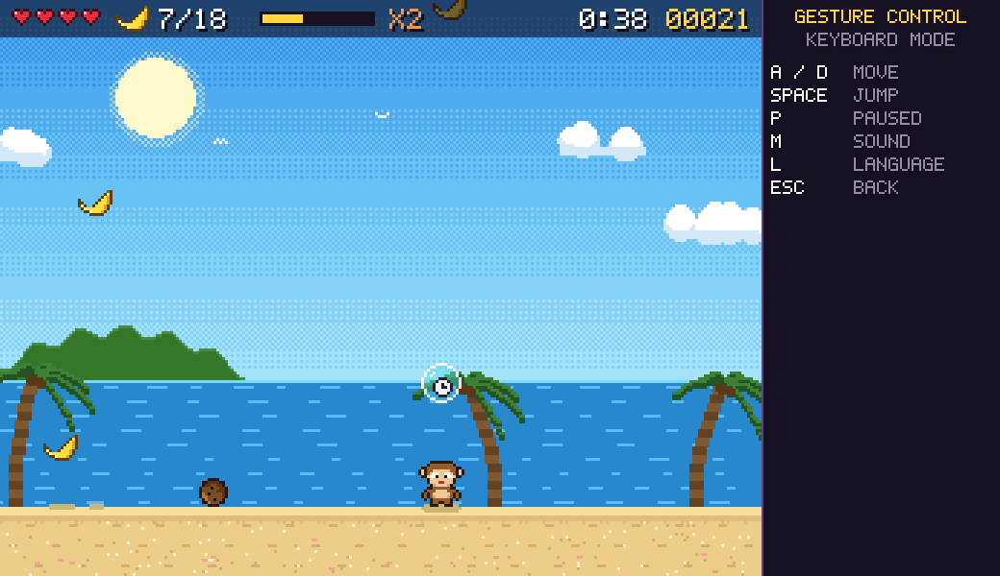

1 · Cómo se juega
Dos gestos, nada más
Atrapa las bananas que caen y salta los cocos que ruedan. Cada 10 bananas cambia el escenario y sube la velocidad. Tienes 90 segundos y 5 corazones.
Inclina el dedo índice
Índice hacia la izquierda: el mono va a la izquierda. Hacia la derecha: va a la derecha. Recto: se queda quieto.
Haz una pinza
Junta la punta del pulgar con la del índice. Cada pinza nueva es un salto.
Los dibujos son la mano promedio de los 28.950 cuadros que grabamos para entrenar.
2 · Desde tu celular
Elige cómo jugar
✋ Una mano (recomendado)
Sostén el celular con una mano y juega con la otra frente a la cámara frontal: la misma mano inclina el índice para moverse y hace la pinza para saltar.
🙌 Dos manos (como en el PC)
Apoya el celular en la mesa o en un soporte. Mano izquierda para moverte y mano derecha para saltar, igual que el juego original.
👆 Solo botones
¿Sin cámara o con poca luz? También hay botones táctiles en pantalla.
- Busca buena luz de frente, no una ventana detrás de ti.
- Deja la mano a unos 30–50 cm de la cámara, con todos los dedos visibles.
- La imagen se procesa dentro de tu celular: no se graba ni se envía nada.
3 · La inteligencia artificial
Cómo piensa el juego
La cámara
Toma unas 20–30 imágenes por segundo de tu mano, como un espejo.
MediaPipe encuentra 21 puntos
Un modelo de Google ubica la muñeca y cada articulación de los dedos.
Nuestra red neuronal decide
Dos redes pequeñas (una por mano) que entrenamos nosotros: la izquierda mira la dirección del índice (8 números) y la derecha las distancias entre las puntas de los dedos (10 números).
Un voto evita errores
Solo cambiamos el comando cuando la mayoría de los últimos cuadros está de acuerdo y la red está segura (≥ 70 %).
4 · Resultados
Probado con una persona nueva
Entrenamos con dos integrantes del equipo y probamos con el tercero, que la red nunca había visto.

La versión de PC (Python + Pygame) tiene 5 niveles, tutorial y calibración. Esta versión web es una adaptación para celular con las mismas redes neuronales.
¿Listo?
Permite el uso de la cámara cuando el navegador lo pregunte.